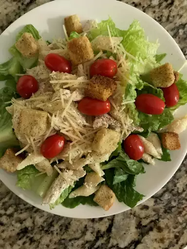

Home
Chicken Caesar Pasta

Description
Penne pasta mixes it up with cooked cubes of chicken, chopped fresh tomatoes,
shredded romaine lettuce, Caesar salad dressing, and red wine vinegar.
Garnish with croutons and Parmesan curls, if you like.
"This was so delicious!" says Lindy505.
"Easy to put together, and if you enjoy Caesar salad,
you're sure to love this recipe."
Ingredients
- 1 pound dry penne pasta
- 1 tablespoon butter
- 6 skinless, boneless chicken breast halves - cut into 1 inch cubes
- ½ teaspoon ground black pepper
- ¼ teaspoon salt
- 1 (8 ounce) bottle Caesar salad dressing
- ¼ cup red wine vinegar
- ½ cup grated Parmesan cheese
- 1 head romaine lettuce - rinsed, dried and shredded
- 1 large tomato, chopped
Directions
- Bring a large pot of lightly salted water to a boil.
Add penne pasta and cook for 8 to 10 minutes or until al dente; drain.
- Melt butter in a large skillet over medium heat. Add chicken, pepper and salt.
Cook 10 minutes or until chicken is cooked through. Remove skillet from heat.
- In a bowl, mix together salad dressing, vinegar and cheese.
Toss together pasta, chicken, lettuce, and dressing mixture. Place in large serving bowl,
and sprinkle with tomato. Garnish with croutons and Parmesan curls, if desired.